COGA · curso 2
Programar en 1.2 · COGA
1 Crear una Ventana
#include <windows.h>
#include <glut.h>
#include <gl.h>
#include <glu.h>
const int W_WIDTH = 500; // Ancho de la ventana
const int W_HEIGHT = 500; // Alto de la ventana
void myDibujo() {
glClear(GL_COLOR_BUFFER_BIT|GL_DEPTH_BUFFER_BIT); //borramos ambos buffers
glBegin(GL_POINTS); //Indicamos que vamos a dibujar puntos
glColor3f(0.0, 1.0, 0.0); //Indicamos el color del punto
glVertex3d(0.5, 0.5,0.5);
glFlush(); //limpia la pantalla (forzamos la impresion del dibujo por pantalla mejor dicho)
glSwapBUffers();//al usar double buffer debemos forzar el intercambio
}
void iniciar() {
glClearColor(1, 0, 0, 1); //le decimos que limpie la pantalla de rojo
glClearDepth(1.0); //especificamos el valor de limpieza del z-buffer
}
int main(int argc, char** argv) {
glutInit(&argc, argv);//con esto iniciamos glut
glutInitDisplayMode(GLUT_RGBA | GLUT_DOUBLE);//Indicamos que vamos a usar RGBA y un buffer doble
glutInitWindowSize(W_WIDTH, W_HEIGHT); //indicamos las dimensiones de nuestra ventana
glutInitWindowPosition(100, 100); //indicamos la posicion de la ventana
glutCreateWindow("FUCK USC"); //creamos nuestra ventana y le ponemmos un titulo descriptivo
iniciar();
glutDisplayFunc(myDibujo); //le indicamos que funcion debe usar para dibujar en pantalla
glutMainLoop(); //esto es un bucle infinito que crea glut para que se muestre todo el rato la imagen en pantalla
return 0;
}
Comentarios:
- Usamos un buffer doble-> implica que se va dibujando en un buffer la imagen y después se intercambia con el otro buffer.

- RGBA-> red green blue y a es para la intensidad
- Usamos el z-buffer-> que almacena información sobre que objetos están más alejados de la cámara, le damos como valor por defecto 1.0 al borrado de este buffer, si ponemos 0.0 no se verá casi ningún objeto.
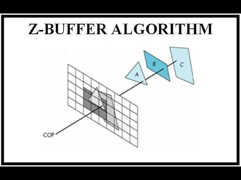
2 Modelado
2.1 Primitivas
Una primitiva es la interpretación de un conjunto ordenado de vértices que se conectan de manera distinta en función del tipo de primitiva.
Para especificar un vértice se usa glVertex, que puede tomar de 2 a 4 parámetros de cualquier tipo numérico (2D con
Para delimitar los vértices se usa glBegin(MACRO) y glEnd().
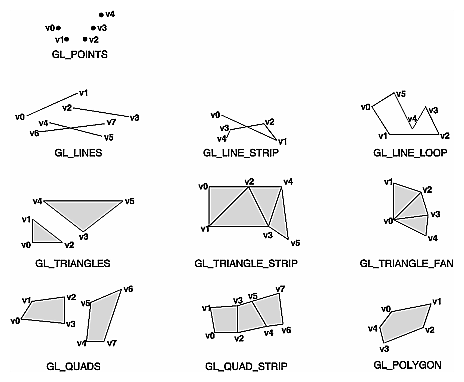
>[!Nota] >Si se introduce un número incorrecto de vértices, se ignorarán los últimos sobrantesPor defecto, un punto se dibuja como un píxel en la pantalla y una línea como un segmento de un píxel de grosor.
- El tamaño de los puntos se puede cambiar con
glPointSize(tamaño)y el grosor de las líneas conglLineWidth(grosor). - El color de los puntos se puede cambiar con
glColor3f(R,G,B)
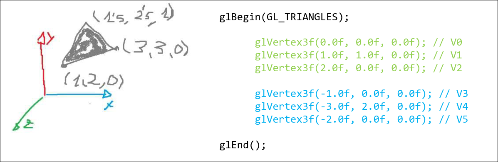
#include <windows.h>
#include <glut.h>
#include <gl.h>
#include <glu.h>
void myDibujo() {
glClear(GL_COLOR_BUFFER_BIT|GL_DEPTH_BUFFER_BIT);
glBegin(GL_LINES); //Indicamos que vamos a dibujar puntos
glColor3f(1.0f, 0.0f, 0.0f); //Indicamos el color del punto
glVertex3f(0.0f, 0.0f,0.0f);
glVertex3f(0.0f, 5.0f,0.0f);
glEnd(); //Le decimos que hemos acabado
//No es necesario poner todo el rato glEnd y GLbegin si vais a usar un mismo tipo de figura, pero es util para entender vuestro c�digo
glFlush();
glutSwapBuffers();
}
2.2 Listas de visualización
Una lista de visualización es un índice que nos permite renderizar un conjunto de vértices previamente almacenados simplemente invocándola.
glGenLists(rango): obtiene idenficadores válidos para listas de visualización, donderangoes el número de índices contiguos deseadosglNewList(lista,modo): define una nueva lista de visualización con el identificadorlistaymodoGL_COMPILEoGL_COMPILE_AND_EXECUTE.glEndList(): finaliza la definición de la lista de visualización.glCallList(lista): invoca la lista de visualización con identificadorlista.
#include <GL/glut.h>
GLuint miLista; //declaro la lista
void crearDisplayList() {
miLista = glGenLists(1); // Generar un id
glNewList(miLista, GL_COMPILE); // Inicia la lista en modo COMPILE -> se guarda pero no se ejecuta
glColor3f(1.0, 0.0, 0.0); // Color rojo
glBegin(GL_TRIANGLES); // Dibujar un triángulo
glVertex2f(-0.5, -0.5);
glVertex2f(0.5, -0.5);
glVertex2f(0.0, 0.5);
glEnd();
glEndList(); // Finalizar la lista
}
void display() {
glClear(GL_COLOR_BUFFER_BIT);
glCallList(miLista); // Llamar a la lista para dibujar el triángulo
glFlush();
}
int main(int argc, char** argv) {
glutInit(&argc, argv);
glutInitDisplayMode(GLUT_SINGLE | GLUT_RGB);
glutInitWindowSize(500, 500);
glutCreateWindow("Display Lists en OpenGL");
crearDisplayList(); // Crear la Display List
glutDisplayFunc(display);
glutMainLoop();
return 0;
}
2.3 Formas Básicas de GLUT
- Cono->
glutSolidCone() - Toro->
glutSolidTorus() - Dodecaedro->
glutSolidDodecahedron() - Octaedro->
glutSolidOctahedron() - Icosaedro->
glutSolidIcosahedron() - Tetera-> `glutSolidTeapot().
También existe la versión Wire en vez de Solid
3 Transformaciones
glMatrixMode(GL_MODELVIEW): para especificar que se desea trabajar con la matriz de transformación de modelo.
glLoadIdentity(void): reemplaza la matriz actual por la identidad 4x4
Hay dos posibles métodos para colocar los valores apropiados en la matriz de transformación:
- Como la matriz se almacena como un array de 16 elementos, estos se pueden establecer manualmente.
glLoadMatrix(array)para carga elarrayen la matriz activa.
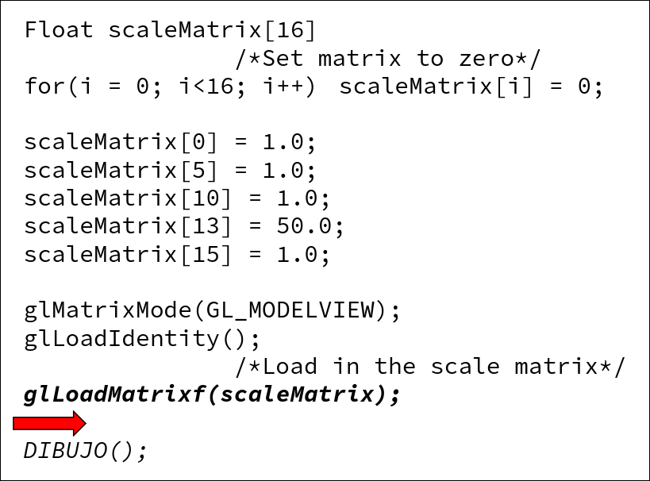
- La otra alternativa a estas funciones es usar las funciones de **transformación** (`glTranslatef`, `glRotatef`, `glScalef`). Las matrices $T$, $R$ y $S$ que generan estas funciones se van multiplicando sobre la matriz activa. El productos de matrices **no es conmutativo**, así que hay que tener cuidado con el orden en el que se usan estas funciones: **la primera función en aplicarse será la última en escribirse en el código**. - Los movimientos que depende unos de otros se pueden heredar consecutivamente. Para ello, se almacenan versiones de la matriz de transformación en una **pila**, de manera que **la actual será la que está más arriba**. - `glPushMatrix()`: almacena en la pila una copia de la matriz activa en la segunda posición de la pila - `glPopMatrix()`: elimina de la pila la matriz que está en la primera posición.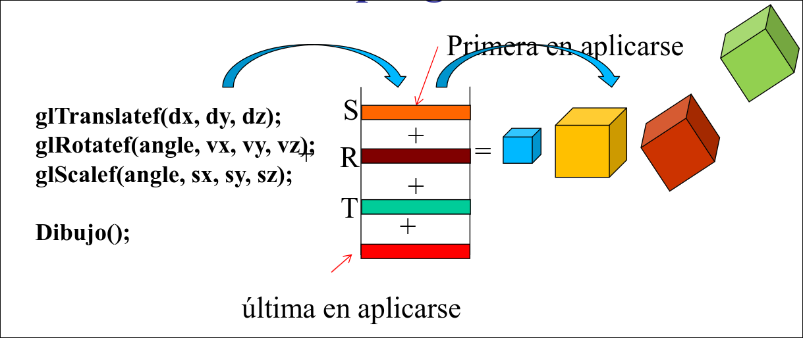
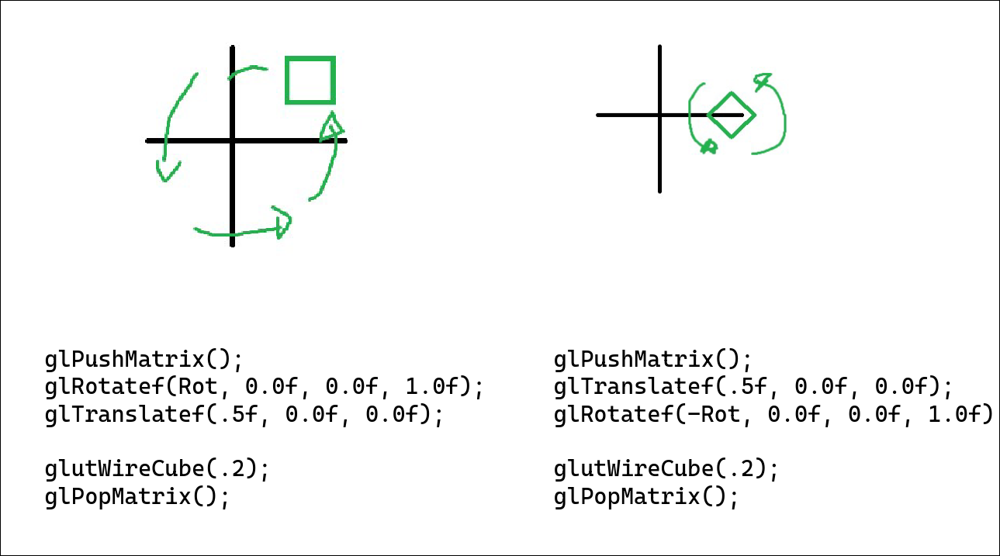
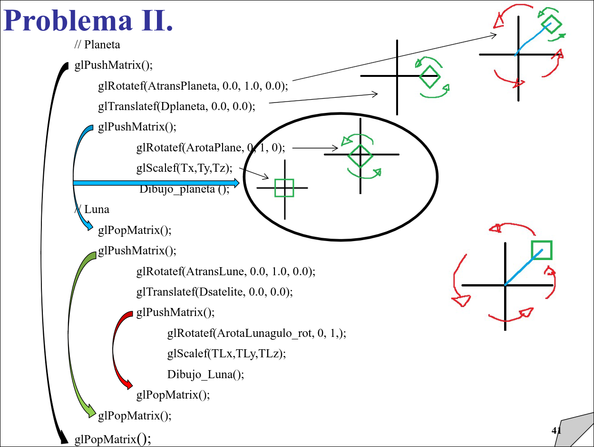
4 Visión
En OpenGL 1.2 el trabajo sobre la cámara (la view matrix y projection matrix) se reúne en la matriz de proyección GL_PROJECTION.
-
glMatrixMode(GL_PROJECTION): para especificar que se desea trabajar con la matriz de proyección. -
glLoadIdentity(void): reemplaza la matriz actual por la identidad 4x4 -
gluLookAt(eye_x, eye_y, eye_z, at_x, at_y, at_z, up_x, up_y, up_z): para determinar dónde y cómo está dispuesta la cámara.eyeindica el punto dónde está la cámara (por defecto(0,0,0))atindica el punto hacia el que mira la cámara (por defecto (0,0,-1))upindica el vector de orientación de la cámara (por defecto (0,1,0))
-
glOrtho3D(left, right, top, down, near, far): para realizar una proyección ortográfica- Los parámetros delimitan el frustrum, que tiene forma de cubo (por defecto (-1,1,-1,1,-1,1)).
- Una vez definido el frustrum, se pueden generar las diferentes proyecciones multivista moviendo la cámara.
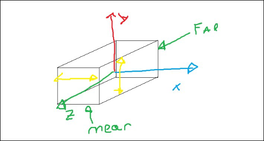
gluPerspective(fovy, aspect, near, far): para realizar una proyección perspectivafovyes el ángulo de de apertura del frustrum, normalmente 45 o 60aspectes la razón de aspecto (alto/ancho del PP), normalmente 1:1, 4:2, 16:9...neardetermina la distancia desde la cámara hasta el PP.fardetermina la distancia desde la cámara hasta el fondo del frustrum
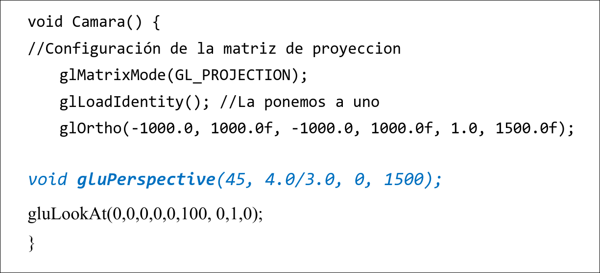
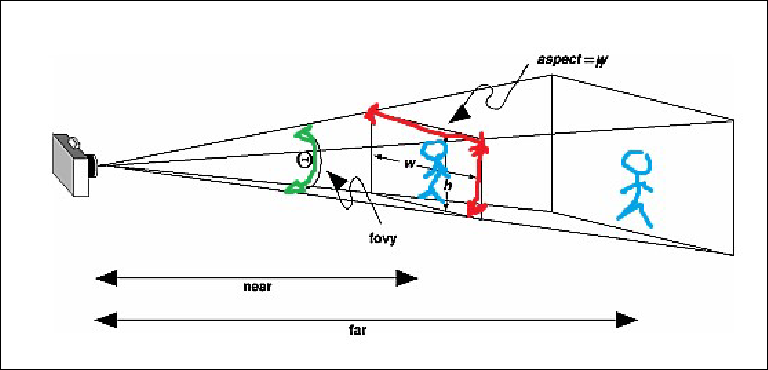
5 Iluminación (crazy shi)
Para iluminar una escena en OpenGl hacen falta varios procesos:
- Iluminar la escena
- Indicar cómo es el modelo de iluminación
- Indicar las propiedades de los materiales.
Las habilitaciones necesarias para llevar a cabo estos procesos se realizan mediante la función glEnable (normalmente antes del glutMainLoop):
glEnable(GL_DEPTH_TEST): habilita el buffer de profundidad, aumenta la velocidad.glEnable(GL_CULL_FACE): habilita la ocultación de caras traseras, aumenta la velocidad.glEnable(GL_LIGHTING): habilita los cálculos de iluminación.glEnable(GL_LIGHTX): habilita una luz concreta (la número X).glEnable(GL_COLOR_MATERIAL): habilita el seguimiento del color.glColorMaterial(face,Mode): indica la cara sobre la que se hace el seguimiento y para qué luces se lleva a cabo. Cada objeto reflejará estas luces según la definición previa de su color.
glShadelModel(GL_FLAT/GL_SMOOTH): habilitar el modelo de sombreado.
5.1 Tipos de Luces
Luces Básicas
Modelo de iluminación general (sin poner luces) que define una luz ambiente básica y especifica cómo se realiza la iluminación de la escena en cuanto a si las luces afecta a las dos caras de un objeto. Propiedades (por defecto):
glLightModelfv(GL_LIGHT_MODEL_AMBIENT, ambiente), valores de la componente ambiente baseglLightModelfv(GL_LIGHT_MODEL_TWO_SIDE, TRUE), indica que las luces afectan a amabas caras de un material.glLightModelfv(GL_LIGHT_MODEL_LOCAL_VIEWER, TRUE), coloca el modo de cálculo con el observador local, si no, todos los cálculos se hacen como si el observador estuviese situado sobre el eje Z.
Luces Direccionales
Están situadas en el infinito y no tienen atenuación. La dirección por defecto es (0,0,1,0).
float direccion[4]={1,1,1,0}
glLightfv(GL_LIGHT0, GL_POSITION, direccion)
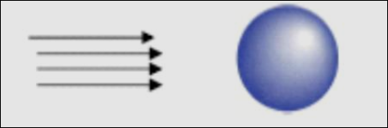
Luces Locales
Se definen como las direccionales, pero el cuarto elemento del vector vale 1.
float posicion[4] = {1,1,1,1}
float direccion[4] = {1,1,1,1}
glLightfv(GL_LIGHT_0, GL_POSITION, posicion)
glLightfv(GL_LIGHT_0, GL_DIRECTION, direccion)
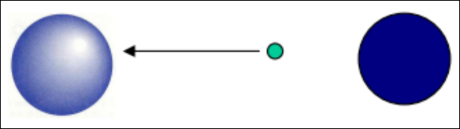
Focos de luz
Se definen als locales pero con una determinada apertura.
glLightf(GL_LIGHT_0, GL_SPOT_CUTOFF, angulo), angulo entre 0 y 180.
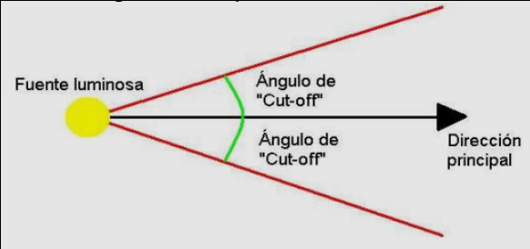
5.2 Propiedades de la Luz
Para especificar las propiedades de la luz:
glLightf(Luz, Parámetro, Valor)(escalar)glLightfv(Luz, Parámetro, PunteroAVector)(vector)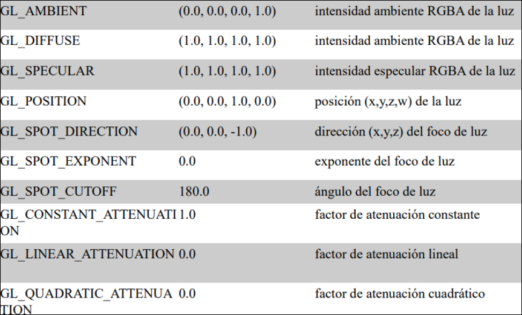
5.6 Propiedades de los Materiales
El modelo de iluminación de Opengl aproxima el color de un material en función de la luz que indice sobre él y la que es capaz de reflejar.
Las propiedades sobre los colores, indican cómo influye cada una de las propiedades de un rayo de luz sobre el objeto.
GL_AMBIENT: comportamiento respecto al componente ambiente de la luzGL_DIFFUSE: Comportamiento respecto al componente difuso de la luz.- Ambas determinan el color del material y suelen tener valores aproximados sino iguales
GL_SPECULAR: comportamiento respecto al componente especular de la luz.- Se suele definir blanca o del color de la luz, de manera que los reflejos del material se degradan desde el color base de la luz incidente hasta el color definido en esta propiedad.
Las propiedades sobre la capacidad de reflexión:
GL_SHININESS: concentración de los puntos que van a reflejar la luz. Puede ser uno sólo o toda la superficie del objeto. Cuanto mayor, mas metálico ([0,128]) por defecto 0GL_EMISSION: capacidad de simular la emisión de luz sin ser propiamente una fuente. Se especifican los colores de la luz que emite. Se usa para simular estrellas, lámparas o simulares.
Para especificar las propiedades del material en cada polígono:
void glMaterial{if}{v}(Cara, parámetro, punteroAVector)
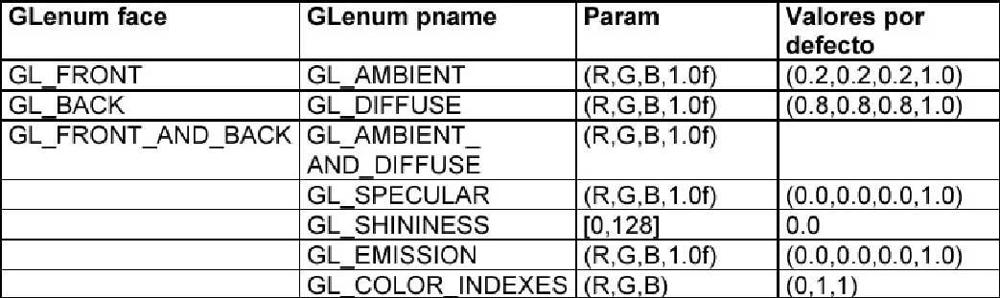
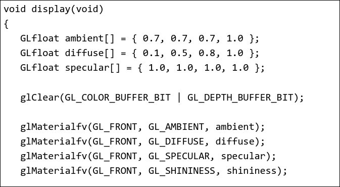
5.7 Cálculo del color en cada Vértice
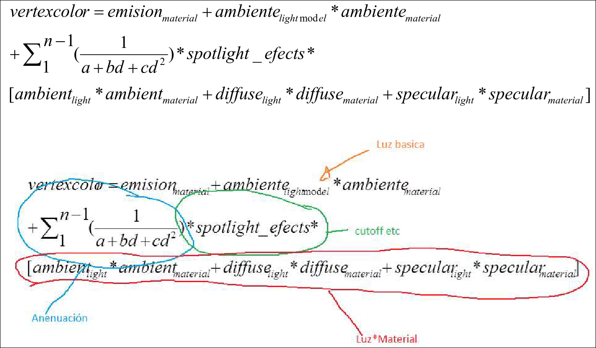
5.8 Sombreado Plano
Cada cara tiene una única normal y cada uno de los puntos que la forman tiene el mismo color. La normal de cada cara se puede calcular a partir de los vértices o se puede especificar para un conjunto de ellos. Es el modelo de iluminación más simple y eficiente.
glShadelModel(GL_FLAT)
5.9 Sombreados de Interpolación
Gourard Shading
Cada vértices tiene su propia normaly el color de cada punto de las caras se calcula mediante interpolación bilineal de los colores de de sus vértices. La normal de cada vértice se calcula por defecto como la media de las normales de las caras (calculadas a partir de los vértices que las forman) de las que forma parte ese vértice. También se puede especificar para cada vértice. Da un efecto de sombreado suave más realista para superficies curvas.
glEnable(GL_SMOOTH)
glShadeModel(GL_SMOOTH)
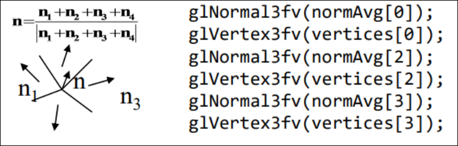
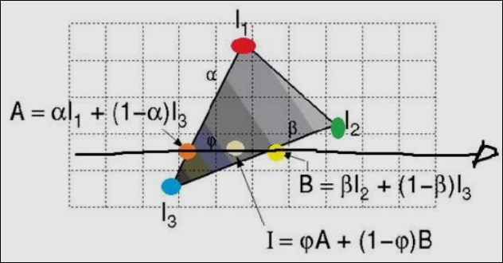
Phong Shading
Cada vértice tiene su propio normal y la normal de cada punto de las caras se calcula mediante interpolación bilineal. Es la más realista de todas, pero consume más recursos. OpenGL no la implementa directamente, es responsabilidad del programador interpolar las normales y asociarlas a todos los puntos